Contents
- Front matter
- —Summary and how this documentation was produced
- Part A · Software Development
- A.1Introduction: the problem
- A.2Requirement analysis
- A.3System design
- A.4Implementation
- A.5Testing
- A.6Deployment
- A.7Screenshots
- A.8Source code listing
- Part B · Database Management
- B.1The DBMS and why it fits
- B.2Database design and ER diagram
- B.3Normalization
- B.4Queries written
- B.5Forms and reports
- B.6Automating the shop's record-keeping
- Closing
- —Known limitations and recommendations
Summary
Adetunji Electronics is a small shop selling chargers, cables, power banks and similar accessories. This project gives it an online storefront: customers browse stock, build a cart, and place an order for delivery or collection. The owner works through a single admin page, adding and pricing products, keeping stock counts and moving each order from pending to confirmed to delivered.
Card payments are deliberately left out. The customer pays by bank transfer after the owner calls to confirm the order, which matches how many small Nigerian retailers already take payment. The software's job is to replace the paper or WhatsApp record of who ordered what: a durable, consistent record of every order, its price at the time of sale, and what that sale did to stock.
The whole system is one Node.js process and one SQLite file. It has no external database server, cloud services or payment gateway. That makes it cheap to run on one small VPS or a machine in the shop, and backing it up means copying one file.
How this documentation was produced
Every claim here was checked against the code in the repository at commit e14eaa0. The application was installed with npm ci, seeded with npm run db:seed and run with npm run dev. It was then driven in headless Chromium with Playwright. The schema, queries and code listings are quoted from the source files named next to them.
The seed script creates six products and one admin account (admin@adetunji.shop, "Shop Owner"). It creates no customers and no orders. To have real records to document, two customer accounts (Chidinma Okafor and Tunde Bakare, both at example.com) were registered and three orders placed through the live user interface while the screenshots were taken. The owner then confirmed one and marked another delivered. Every order, total and stock figure in this documentation comes from those rows in data/store.db.
The order detail page (/orders/:id) never displayed. The file src/routes/orders.$id.tsx made it a child of the /orders route, which has no <Outlet />, so the order list rendered in its place. That included the page a customer is sent to right after checkout. Renaming the file to orders_.$id.tsx (TanStack Router's suffix for "same URL, not nested") fixes it, and the public URL is unchanged. See §A.5.
Software Development
What the software is for, what it has to do, how it is built, and how far it has been tested and deployed.
- A.1Introduction
- A.2Requirement analysis
- A.3System design
- A.4Implementation
- A.5Testing
- A.6Deployment
- A.7Screenshots
- A.8Source code listing
A.1Introduction: the problem
A small accessories shop usually runs on stock it can see and orders it keeps in its head, a notebook or a WhatsApp chat. That holds up when a handful of customers walk in. It breaks down once orders arrive from people who are not in the shop: it is easy to promise the last 65W charger to two people, to quote yesterday's price, or to lose track of who has paid.
The store described here closes that gap for one shop, Adetunji Electronics, with as little machinery as possible:
- A public catalogue with live stock. Every product card shows the count on the shelf (for example "5 in stock" for the 65W GaN dual port after one sale). The add-to-cart control will not go above that number.
- Orders that cannot oversell. Stock is checked and reduced inside one database transaction at the moment the order is placed (§A.3.3).
- Payment matched to local practice. Checkout asks for a phone number, not a card. Orders start as pending ("Awaiting payment" to the customer). The order page tells the customer, "You will get a call on 0803 412 7781 with transfer details once it is confirmed." The owner confirms the transfer by hand and moves the order on.
- Delivery or collection. The customer chooses delivery to an address (a flat ₦2,000 fee,
DELIVERY_FEEinsrc/lib/orders-data.ts:6) or free collection from the shop. - A record that does not drift. Each order line copies the product name and price at the moment of sale, so a later price change never rewrites history (§B.3).
The README lists what is out of scope on purpose: card payments, search, coupons, reviews, multiple shops and courier integration. This documentation treats those as deliberate scope limits, not missing features.
A.2Requirement analysis
A.2.1 Stakeholders
| Stakeholder | Interest | How the system represents them |
|---|---|---|
| Shop owner (admin) | Keep the catalogue, prices and stock right. See every order and record each payment and hand-over. | A users row with is_admin = 1. Seeded as "Shop Owner", admin@adetunji.shop. On an empty database the first account to register becomes admin (auth-api.ts:55-57). |
| Customer | See what is in stock and what it costs, order without a card, and follow the order. | A self-registered users row with is_admin = 0. Can read only their own orders (store-actions.ts:31-32). |
| Visitor | Browse before committing. | No account. The home page, shop, product pages and cart all work signed out. Checkout redirects to /login. |
| Operator / maintainer | Run, update and back up the shop on one machine. | npm scripts for seeding, password reset, build and serve. All state lives in data/store.db and public/uploads. |
A.2.2 Functional requirements
| ID | Requirement | Where it is met |
|---|---|---|
| F1 | List all products with price and stock; show one product in detail. | fetchShopProductsFn, fetchProductFn · routes/shop.tsx, routes/products.$id.tsx |
| F2 | Keep a cart across page loads without an account. | lib/cart.tsx, stored in localStorage["store_cart"] |
| F3 | Register, sign in and sign out with email and password. | registerFn, loginFn, logoutFn in auth-api.ts |
| F4 | Place an order for delivery (address required) or collection, with a phone number. | placeOrderFn → createOrder |
| F5 | Refuse an order that exceeds stock and reduce stock when an order succeeds. | createOrder transaction (orders-data.ts:23-114) |
| F6 | Show a customer their own order history and order detail. | fetchUserOrdersFn, fetchOrderDetailFn |
| F7 | Admin: add, edit and delete products, including an optional image. | saveProductFn, deleteProductFn in admin-api.ts |
| F8 | Admin: see all orders and set each one's status. | fetchAdminDataFn, updateOrderStatusFn |
| F9 | Operator: reset a password from the command line, which also signs that user out everywhere. | scripts/set-password.ts |
A.2.3 Non-functional requirements
| ID | Quality | How the code achieves it |
|---|---|---|
| N1 | Price integrity | The browser sends only productId and qty. Names, prices and totals are read back from the database on the server (checkout-api.ts:7-14). |
| N2 | Stock integrity | Duplicate lines are merged before validation. The decrement runs inside BEGIN…COMMIT and carries AND stock >= ?, so stock cannot go negative. |
| N3 | Money accuracy | Whole naira stored as INTEGER, never floating point. naira() in lib/utils.ts is the only place a price is formatted. |
| N4 | Authentication security | Passwords hashed with scrypt and a per-user 16-byte salt, compared with timingSafeEqual. Sessions use 32-byte random tokens in an httpOnly, sameSite=lax cookie that lasts 30 days. Login gives the same error for an unknown email and a wrong password. |
| N5 | Authorization | Admin rights are checked on the server inside every admin function (requireAdmin), not just by hiding UI. Order reads check ownership. |
| N6 | Upload safety | Images under 4 MB. The format is decided by the file's leading bytes (JPG, PNG, WebP or AVIF), and the extension comes from that allowlist, never from the uploaded file name. |
| N7 | Responsiveness | Data routes avoid blocking loaders and use React Query with prefetch-on-hover. The README reports 62–105 ms to content at 250 ms simulated latency. That figure is the authors' measurement and was not re-measured for this documentation. |
| N8 | Deployability | Runs on Node ≥ 22.5 with no external services. A single file holds all state, so a backup is a file copy. |
| N9 | Maintainability | Strict TypeScript. npm run verify runs typecheck, oxlint, the oxfmt check and the build. A layered file-naming convention keeps database code out of the client bundle. |
A.3System design
A.3.1 Architecture tiers
The application is a classic three-tier system packed into one process. TanStack Start renders pages on the server and then hydrates them in the browser. Every database call crosses an RPC boundary created with createServerFn, so the browser bundle contains only a stub. That boundary is enforced by naming convention: *-data.ts files contain SQL and are imported only by *-api.ts and *-actions.ts files. The connection itself is wrapped in createServerOnlyFn, which throws if it is ever reached from client code.
public/uploads, so a new upload is live without a rebuild.A.3.2 Use cases
Three actors use the system. A Customer is a Visitor who has registered, so they inherit everything a Visitor can do. The Shop owner uses the same login form and differs only in the is_admin flag, which the server checks on every admin action.
A.3.3 Core workflow: placing an order
Placing an order is the one workflow where several things can go wrong at once, and most of the code's care goes into it. The flowchart follows placeOrderFn (checkout-api.ts:27-59) and createOrder (orders-data.ts:11-115) branch by branch. Checks made before the transaction return an error straight away. Any failure after BEGIN throws, rolls the whole transaction back, and comes back to the form as { error }. Nothing is half-written.
AND stock >= ? guard on the UPDATE is a second line of defence at the database, so even a future code path that skips validation cannot push stock below zero.A.3.4 Order status lifecycle
An order's status column takes one of four values. Below is the intended flow, as implied by the labels the UI shows a customer, next to what the code actually enforces.
A.4Implementation
- Language
- TypeScript 7 in strict mode, plus one plain ES module (
scripts/serve.mjs) - Framework
- TanStack Start 1.168 (SSR + server functions) on Vite 8, with TanStack Router 1.170 for file-based routes
- UI
- React 19, shadcn/ui components on Base UI, Tailwind CSS 4, lucide icons, sonner toasts
- Data fetching
- TanStack React Query 5, one client per browser tab
- Validation
- zod 4 at the checkout boundary. Hand-written guards in the admin and auth functions.
- Database
node:sqlite, built into Node.js. There is no ORM or query builder: queries are hand-written SQL with positional parameters.- Crypto
node:crypto: scrypt, randomBytes, timingSafeEqual- Tooling
- oxlint, oxfmt, tsc, tsx (scripts), @tanstack/router-cli (route tree generation)
A.4.1 File layering
TanStack Start refuses to bundle server-only modules into the client, and that check is transitive. The code therefore follows a strict layering, which the README documents and the source follows:
| Layer | Files | Rule |
|---|---|---|
| Routes / components | src/routes/*.tsx, src/components | Never import *-data.ts. They call server functions or use React Query options. |
| RPC boundary | *-api.ts, *-actions.ts | Each export is a createServerFn. Its body is stripped from the client bundle. |
| Data access | products-data.ts, orders-data.ts, auth-data.ts, session-data.ts | The only files with SQL or cookies. |
| Connection | lib/db/client.ts | Wrapped in createServerOnlyFn: it throws if reached from the client. It applies the schema on first connect. |
| Shared types | lib/types.ts | Plain interfaces, safe to import on either side. |
A.4.2 Representative code: the checkout boundary
This is the whole checkout server function. The zod schema validates the request for real, because TypeScript types disappear at the network boundary. The handler then adds the checks zod cannot express: a session must exist, and delivery needs an address. Errors are returned rather than thrown, and redirects are left to the caller. The source comment explains why: a redirect thrown inside a server function was serialised to the browser but never applied, so the customer stayed on /checkout.
src/lib/checkout-api.ts · lines 15–59
const lineSchema = z.object({
productId: z.number().int().positive(),
qty: z.number().int().min(1).max(50),
});
const checkoutSchema = z.object({
fulfilment: z.enum(["delivery", "pickup"]),
address: z.string().trim().max(500).default(""),
phone: z.string().trim().min(1).max(40),
items: z.array(lineSchema).min(1).max(100),
});
export const placeOrderFn = createServerFn({ method: "POST" })
.validator(checkoutSchema)
.handler(async ({ data }) => {
const user = currentUser();
if (!user) return { error: "Sign in to place an order." as const };
const address = data.address.trim();
if (data.fulfilment === "delivery" && !address) {
return { error: "Enter a delivery address." as const };
}
let orderId: number;
try {
orderId = createOrder({
userId: user.id,
fulfilment: data.fulfilment,
address: data.fulfilment === "delivery" ? address : null,
phone: data.phone,
items: data.items,
});
} catch (err) {
// Stock and quantity failures are raised inside the transaction.
const message = err instanceof Error ? err.message : "Could not place the order.";
return { error: message };
}
return { ok: true as const, orderId };
});In the browser, routes/checkout.tsx builds the request from cart lines, keeping only productId and qty ("Only ids and quantities are sent. The server owns pricing."). On success it clears the cart and navigates to the order page.
A.4.3 Other implementation decisions worth noting
- Session lookup and cleanup.
userForTokenjoinssessionstousersand checks expiry on every read. On roughly every 100th read it also deletes expired sessions, so a token that is never presented again does not linger forever, and no cron job is needed. - Schema in TypeScript. The DDL lives in a string in
lib/db/schema.ts, not a.sqlfile, because reading a.sqlfile withfsbroke in production (it was not copied intodist/). Every statement isCREATE … IF NOT EXISTSand runs on each connection. - No route loaders for data. Pages fetch with
useQueryand show skeletons, so navigation never waits on a server round trip. Only access control (beforeLoadon/admin,/checkout,/orders) blocks. - One query client per request or tab.
getQueryClient()returns a fresh client on the server. A shared module-level client would leak one visitor's cached session to the next.
A.5Testing
The repository has no automated tests: no *.test.* or *.spec.* files, no test runner (Vitest, Jest or Playwright Test) in package.json, no test script and no CI workflow. Everything below was either static checking or a manual or scripted run against the live app while preparing this documentation.
A.5.1 What does exist: static verification
npm run verify chains four checks. Each was run on the code as fixed in this documentation:
| Check | Command | Result |
|---|---|---|
| Type checking | tsc --noEmit | Pass, no errors |
| Lint | oxlint src scripts | Pass, no findings |
| Formatting | oxfmt --check . | Pass ("All matched files use the correct format", 59 files) |
| Production build | vite build | Pass. Client and SSR bundles emitted (dist/server/server.js 80 kB) |
A.5.2 Behaviour exercised against the running app
These were driven through the real UI with Playwright (headless Chromium, 1280 × 820) and confirmed by reading the database afterwards.
| Scenario | Expected | Observed |
|---|---|---|
Signed-out visitor opens /admin, /orders | Redirected | Pass. HTTP 307. /admin sends the browser to /. |
| Register two customers, place three orders (one delivery, two collection) | Orders stored with server-computed totals | Pass. Order #1 ₦54,000 + ₦2,000 = ₦56,000. #2 ₦12,500. #3 ₦60,500. |
| Stock reduced exactly by quantities ordered | e.g. USB-C cable 22 → 20, lightning cable 30 → 27 | Pass, all six products reconcile with the seed values |
| Stored subtotal equals Σ(price × qty) of its lines | Equal for every order | Pass (query in §B.4, Q10) |
| Admin changes status (pending → confirmed, pending → delivered) | Customer sees the new badge | Pass. Order #1 shows "Confirmed" to Chidinma. |
| Customer B opens Customer A's order URL | Refused | Pass. Tunde sees "We could not find that page", with no address or totals leaked. |
Customer opens /orders/1 (own order) | Order detail page | Fail before fix: the order list rendered instead. Pass after the route fix (below). |
npm run build then scripts/serve.mjs | Starts, verifies manifest, serves | Pass. "asset manifest ok (33 files referenced)". /, /shop, /products/1, /login return 200. |
A.5.3 Defect found: order detail route never rendered
In TanStack Router's file naming, orders.$id.tsx is a child of orders.tsx. The generated route tree had getParentRoute: () => OrdersRoute. A child renders inside its parent's <Outlet />, and routes/orders.tsx has none, so visiting /orders/1 showed the order list. The same happened to the page checkout.tsx navigates to after every successful order, so a customer never saw the "Next step: you will get a call" panel.
The fix renames the file to orders_.$id.tsx. The trailing underscore tells the router to keep the URL /orders/$id but attach the route to the root. The createFileRoute id was updated to match and the route tree regenerated. No links had to change.
A.5.4 Not tested, and worth testing first
- Concurrent checkouts for the last unit. The transaction design is sound by inspection, but nothing exercises it.
- The oversell paths: duplicate lines adding up to more than 50, quantity above stock, a product deleted mid-cart.
- Image upload validation: polyglot files, more than 4 MB, a wrong extension on valid bytes.
- Session expiry and the probabilistic sweep, and
set-password.tssigning out existing sessions. - Non-admin calls to admin server functions made directly, not through the UI.
Most of createOrder and auth-data.ts could be unit-tested with Node's built-in test runner against a temporary DATA_DIR, without adding a framework.
A.6Deployment
The app targets one machine with a persistent disk, such as a VPS or a computer in the shop. It is not suitable for serverless hosting, because the database is a local file. Everything below comes from package.json, scripts/, .env.example and the README.
A.6.1 Commands
# one-time setup on the server (Node 22.5 or newer)
npm ci
npm run db:seed # creates data/store.db, 6 products, admin account
npm run user:password -- admin@adetunji.shop 'a-long-unique-password'
# release
npm run build # vite build → dist/client + dist/server/server.js
PORT=3000 HOST=0.0.0.0 npm run serve # node scripts/serve.mjs, run under pm2/systemd
# or both in one step:
npm run deploy # = npm run build && npm run serveA.6.2 Configuration
| Variable | Default | Used by |
|---|---|---|
DATA_DIR | ./data | lib/db/client.ts, resolved against the working directory. Holds store.db. |
PORT / HOST | 3000 / 0.0.0.0 | scripts/serve.mjs |
ADMIN_EMAIL / ADMIN_PASSWORD | admin@adetunji.shop / changeme123 | scripts/seed.ts only, on first seed |
A.6.3 Why a custom server
vite build for TanStack Start produces a fetch handler, not a listening server, and vite preview does not run it. scripts/serve.mjs fills that gap. It mounts the handler on node:http and serves static assets with long-lived caching for hashed files. It serves /uploads/* from the real public/uploads directory, with a path-traversal guard, and buffers request bodies so server-function POSTs arrive intact. At startup it renders / and refuses to run if any referenced asset is missing on disk, which catches the case where the server was not restarted after a rebuild.
A.6.4 HTTPS, testing over the internet, and backup
- Terminate TLS at a reverse proxy in front of
serve.mjs. - For a quick test from a phone, the README uses a Cloudflare quick tunnel:
cloudflared tunnel --url http://localhost:3002. - Backup: copy
data/store.db. With WAL mode enabled, copy while the server is stopped, or use SQLite's online backup, so the-walfile is included. Uploaded images inpublic/uploadsalso need copying. The README says "Nothing else is stateful", which leaves those images out.
The README says the session cookie "is not marked secure". The code (session-data.ts:21) sets secure: process.env.NODE_ENV === "production", and the production bundle compiles this to secure: true (checked in dist/server). In practice a production build needs HTTPS for sign-in to work, except on localhost, which browsers treat as secure. Serving the build over plain HTTP on a LAN address would silently drop the cookie.
A.7Screenshots
All screens were captured from the running application at http://localhost:3000 with the seeded catalogue and the orders described in the Summary. The seed sets no product images, so the cards show the app's own "No image" placeholder.
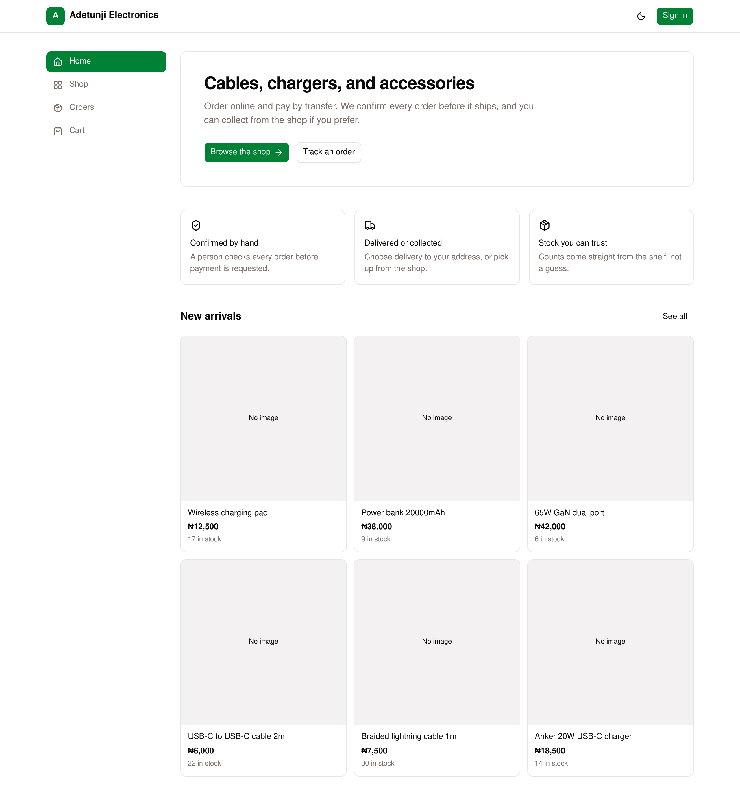
/), signed out. A hero with links to the shop and order tracking, three promises ("Confirmed by hand", "Delivered or collected", "Stock you can trust"), and the six newest products.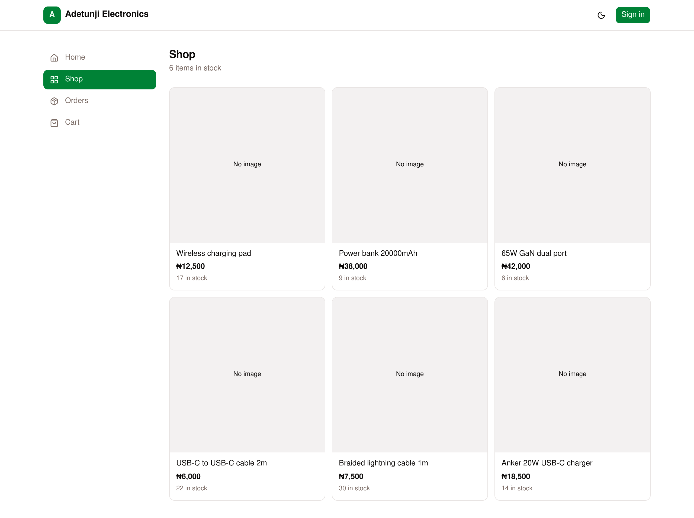
/shop). The full catalogue, newest first (ORDER BY id DESC), with price and live stock. This was captured before any orders, so it shows the seeded counts.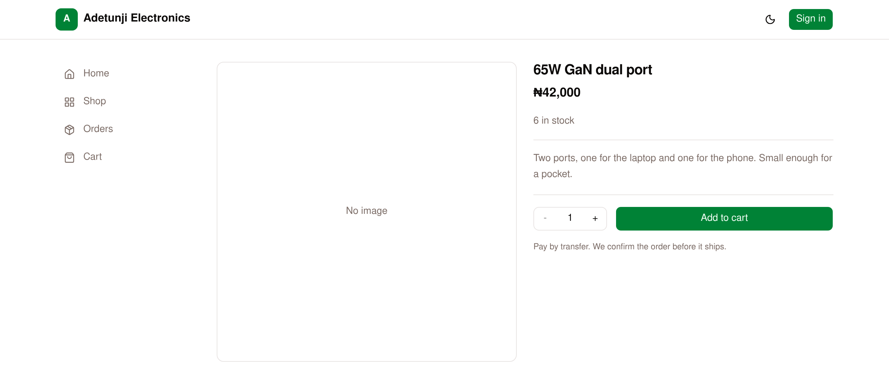
/products/4). The quantity stepper is capped at the stock count, and "Add to cart" becomes "Sold out" at zero.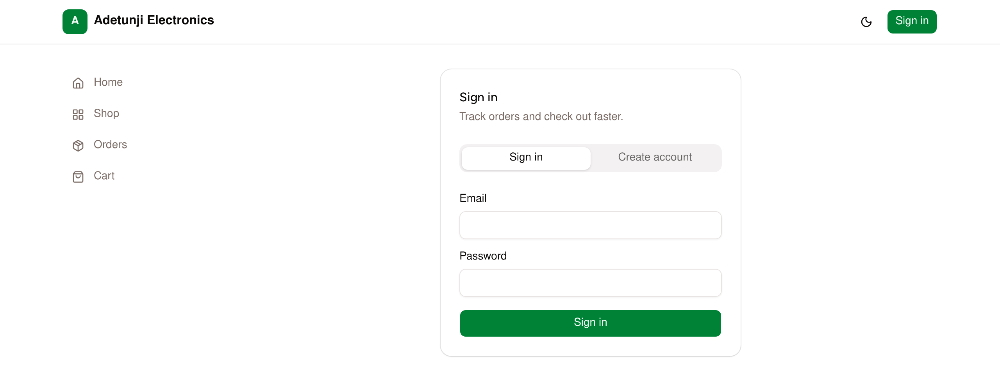
/login). One form serves customers and the owner.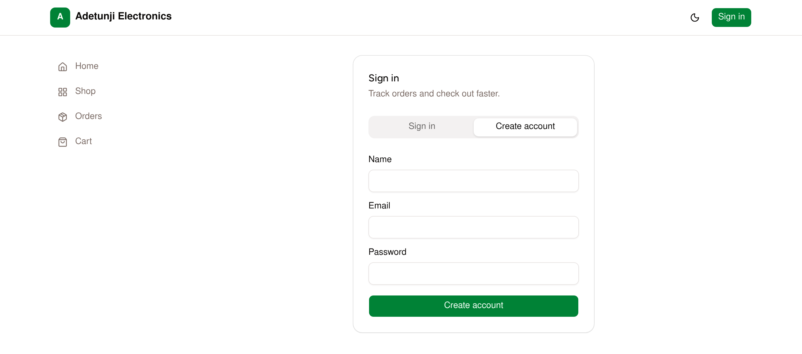
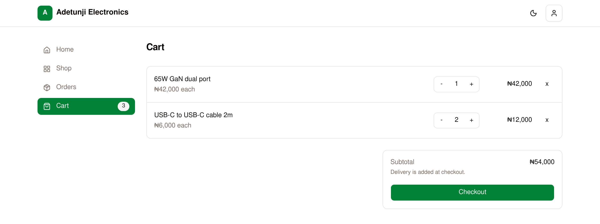
/cart). Lines and subtotal come from browser storage. The prices shown here are display-only: the server re-prices every order.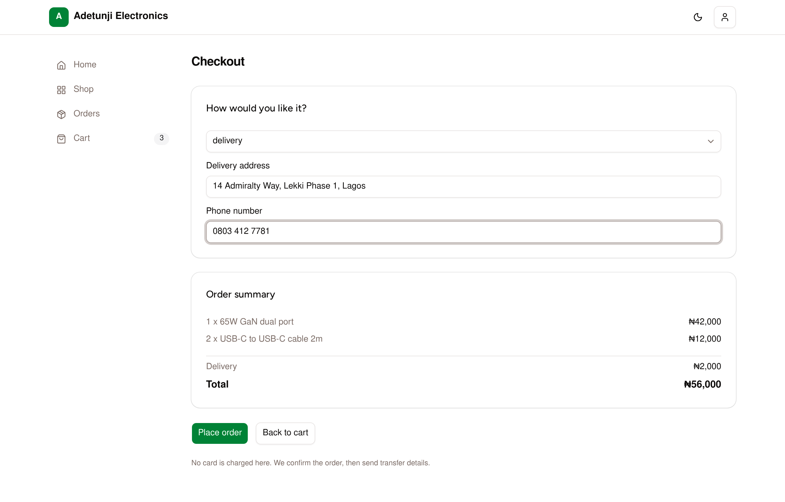
/checkout) for delivery to Lekki Phase 1, Lagos, with the ₦2,000 delivery fee added. The select shows the raw value "delivery" rather than its label, a minor UI quirk.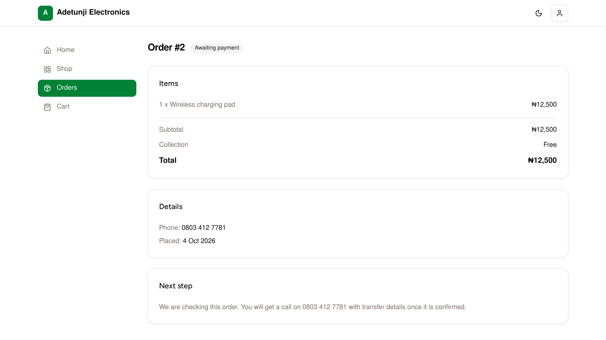
pending and tells the customer to expect a call with transfer details.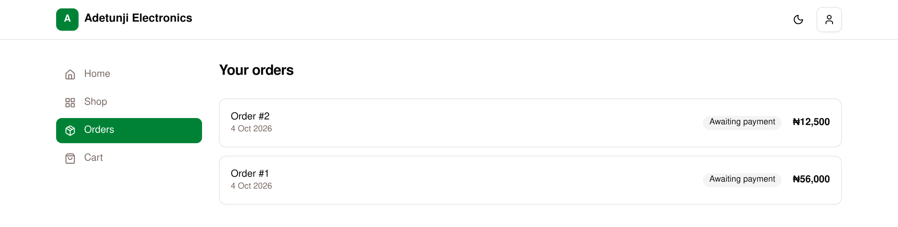
/orders) for Chidinma Okafor, newest first, with a status badge for each order.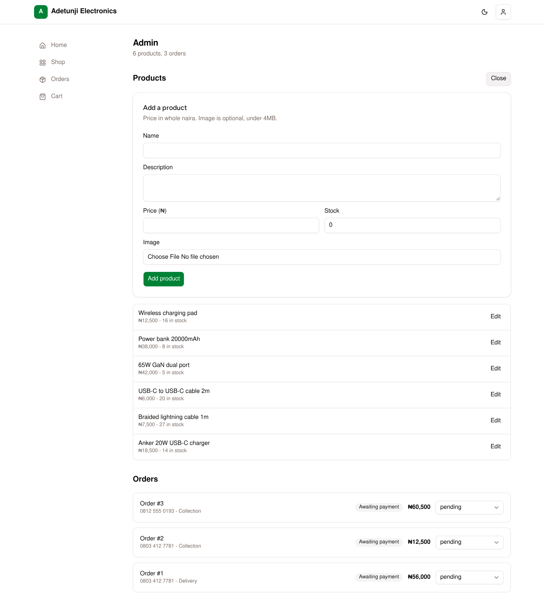
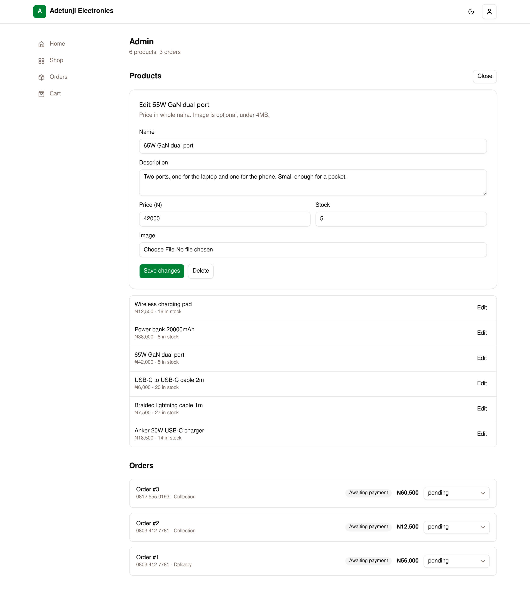
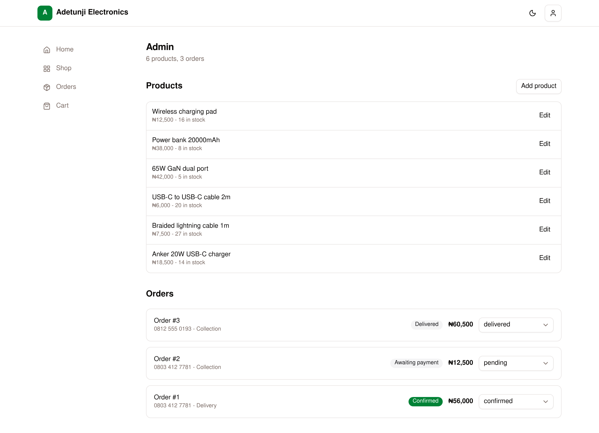
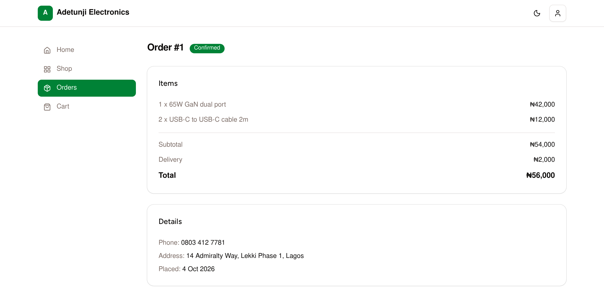
order_items, not from the current product price.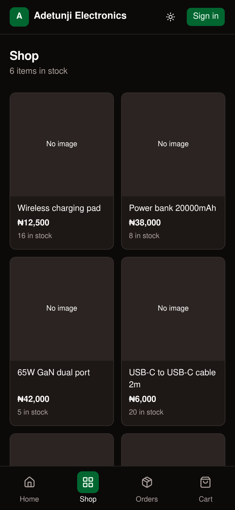
A.8Source code listing
A.8.1 Database schema
src/lib/db/schema.ts · the SCHEMA string, applied on every connection
CREATE TABLE IF NOT EXISTS users (
id INTEGER PRIMARY KEY AUTOINCREMENT,
email TEXT NOT NULL UNIQUE,
name TEXT NOT NULL,
password_hash TEXT NOT NULL,
is_admin INTEGER NOT NULL DEFAULT 0,
created_at TEXT NOT NULL DEFAULT (datetime('now'))
);
CREATE TABLE IF NOT EXISTS sessions (
token TEXT PRIMARY KEY,
user_id INTEGER NOT NULL REFERENCES users(id) ON DELETE CASCADE,
created_at TEXT NOT NULL DEFAULT (datetime('now')),
expires_at TEXT NOT NULL
);
CREATE INDEX IF NOT EXISTS idx_sessions_user ON sessions(user_id);
CREATE INDEX IF NOT EXISTS idx_sessions_expiry ON sessions(expires_at);
CREATE TABLE IF NOT EXISTS products (
id INTEGER PRIMARY KEY AUTOINCREMENT,
name TEXT NOT NULL,
description TEXT NOT NULL DEFAULT '',
price INTEGER NOT NULL,
stock INTEGER NOT NULL DEFAULT 0,
image_path TEXT,
created_at TEXT NOT NULL DEFAULT (datetime('now'))
);
CREATE TABLE IF NOT EXISTS orders (
id INTEGER PRIMARY KEY AUTOINCREMENT,
user_id INTEGER NOT NULL REFERENCES users(id),
-- 'pending' | 'confirmed' | 'delivered' | 'cancelled'
status TEXT NOT NULL DEFAULT 'pending',
-- 'delivery' | 'pickup'
fulfilment TEXT NOT NULL,
address TEXT,
phone TEXT NOT NULL,
subtotal INTEGER NOT NULL,
delivery_fee INTEGER NOT NULL DEFAULT 0,
total INTEGER NOT NULL,
created_at TEXT NOT NULL DEFAULT (datetime('now'))
);
CREATE INDEX IF NOT EXISTS idx_orders_user ON orders(user_id);
CREATE TABLE IF NOT EXISTS order_items (
id INTEGER PRIMARY KEY AUTOINCREMENT,
order_id INTEGER NOT NULL REFERENCES orders(id) ON DELETE CASCADE,
product_id INTEGER NOT NULL REFERENCES products(id),
-- Name and price are copied at purchase time so history stays correct
-- if the product is later renamed or repriced.
name TEXT NOT NULL,
price INTEGER NOT NULL,
qty INTEGER NOT NULL
);
CREATE INDEX IF NOT EXISTS idx_order_items_order ON order_items(order_id);A.8.2 createOrder: the transactional core
src/lib/orders-data.ts · lines 6–115
export const DELIVERY_FEE = 2000;
/** Caps a single product line so a request cannot create unbounded rows. */
const MAX_QTY_PER_LINE = 50;
export function createOrder(input: {
userId: number;
fulfilment: Fulfilment;
address: string | null;
phone: string;
items: { productId: number; qty: number }[];
}): number {
db().exec("BEGIN");
try {
// Merge duplicate lines before anything else. A request can contain the
// same product many times, and each line would otherwise be validated
// against the same pre-decrement stock reading, overselling the item.
const wanted = new Map<number, number>();
for (const item of input.items) {
if (!Number.isInteger(item.qty) || item.qty < 1) {
throw new Error("Quantity must be a whole number of at least 1.");
}
if (item.qty > MAX_QTY_PER_LINE) {
throw new Error(`You can order at most ${MAX_QTY_PER_LINE} of one item.`);
}
wanted.set(item.productId, (wanted.get(item.productId) ?? 0) + item.qty);
}
const lines: { productId: number; name: string; price: number; qty: number }[] = [];
for (const [productId, qty] of wanted) {
if (qty > MAX_QTY_PER_LINE) {
throw new Error(`You can order at most ${MAX_QTY_PER_LINE} of one item.`);
}
const product = one<{ id: number; name: string; price: number; stock: number }>(
"SELECT id, name, price, stock FROM products WHERE id = ?",
productId,
);
if (!product) throw new Error("One of the items is no longer available.");
if (product.stock < qty) throw new Error(`Not enough stock for ${product.name}`);
lines.push({ productId: product.id, name: product.name, price: product.price, qty });
}
const subtotal = lines.reduce((n, i) => n + i.price * i.qty, 0);
const deliveryFee = input.fulfilment === "delivery" ? DELIVERY_FEE : 0;
const total = subtotal + deliveryFee;
const r = run(
`INSERT INTO orders (user_id, status, fulfilment, address, phone, subtotal, delivery_fee, total)
VALUES (?, 'pending', ?, ?, ?, ?, ?, ?)`,
input.userId, input.fulfilment, input.address, input.phone, subtotal, deliveryFee, total,
);
const orderId = Number(r.lastInsertRowid);
for (const item of lines) {
run(
"INSERT INTO order_items (order_id, product_id, name, price, qty) VALUES (?, ?, ?, ?, ?)",
orderId, item.productId, item.name, item.price, item.qty,
);
// The stock >= qty guard makes negative stock impossible at the database
// level, so a future path that skips validation still cannot oversell.
const res = run(
"UPDATE products SET stock = stock - ? WHERE id = ? AND stock >= ?",
item.qty, item.productId, item.qty,
);
if (res.changes !== 1) throw new Error(`Not enough stock for ${item.name}`);
}
db().exec("COMMIT");
return orderId;
} catch (err) {
db().exec("ROLLBACK");
throw err;
}
}Some argument lists are joined onto single lines here to save space. The logic and statements match the file.
A.8.3 saveImage: content-based upload validation
src/lib/admin-api.ts · lines 15–69
type Format = { ext: string; matches: (b: Buffer) => boolean };
const ALLOWED: Format[] = [
{ ext: ".jpg", matches: (b) => b.length > 3 && b[0] === 0xff && b[1] === 0xd8 && b[2] === 0xff },
{ ext: ".png", matches: (b) => b.length > 8 && b[0] === 0x89 && b[1] === 0x50 && b[2] === 0x4e && b[3] === 0x47 },
{ ext: ".webp", matches: (b) => b.length > 12 &&
b.subarray(0, 4).toString("ascii") === "RIFF" && b.subarray(8, 12).toString("ascii") === "WEBP" },
{ ext: ".avif", matches: (b) => b.length > 12 &&
b.subarray(4, 8).toString("ascii") === "ftyp" && b.subarray(8, 12).toString("ascii").startsWith("avi") },
];
export const MAX_UPLOAD_BYTES = 4 * 1024 * 1024;
async function saveImage(file: FormDataEntryValue | null): Promise<string | null> {
if (!(file instanceof File) || file.size === 0) return null;
if (file.size > MAX_UPLOAD_BYTES) throw new Error("Image must be under 4MB.");
const bytes = Buffer.from(await file.arrayBuffer());
const format = ALLOWED.find((f) => f.matches(bytes));
if (!format) throw new Error("That file is not a JPG, PNG, WebP, or AVIF image.");
await mkdir(UPLOAD_DIR, { recursive: true });
const name = `${Date.now()}-${Math.random().toString(36).slice(2, 8)}${format.ext}`;
await writeFile(join(UPLOAD_DIR, name), bytes);
return `/uploads/${name}`;
}Database Management
The database engine, the schema and why it is shaped the way it is, the queries the application actually runs, and how they replace the shop's manual records.
- B.1The DBMS and why it fits
- B.2Database design and ER diagram
- B.3Normalization
- B.4Queries written
- B.5Forms and reports
- B.6Automating the shop's record-keeping
B.1The DBMS and why it fits
The store uses SQLite 3.50.4 through node:sqlite, the SQLite binding built into Node.js (24.7 was used here; the README asks for 22.5 or newer). The database is a single file, data/store.db, opened once per process with DatabaseSync and cached on globalThis so dev-server reloads do not leak handles.
Two pragmas are set on every connection:
journal_mode = WAL. Readers do not block the writer, so customers can keep browsing while an order commits.foreign_keys = ON. SQLite leaves foreign keys off by default. Here they are enforced, which is what makes deleting a product that appears in a past order fail. The admin page turns that failure into the message "Set its stock to 0 to retire it."
Why SQLite fits this deployment
| Property of the shop | Consequence for the DBMS choice |
|---|---|
| One shop, one server, one process | There is no second application server that needs network access to the data. An embedded engine skips a database server, its credentials and its network port. |
| Low write volume (orders arrive one at a time) | SQLite allows one writer at a time. For a small shop, writes take milliseconds and never queue in practice. |
| Run by a shop owner, not a DBA | No service to install, tune or upgrade. Backup is a file copy (§A.6.4). |
| Correctness matters more than scale | Full ACID transactions, foreign keys and UNIQUE constraints: everything createOrder relies on. |
| Built-in to the runtime | No native npm driver to compile, so npm ci on a fresh VPS is enough. |
The README states the trade-off plainly: this is "built for a single VPS or home server, not serverless, because the database is a local file." Running several app servers behind a load balancer would mean moving to a client–server DBMS such as PostgreSQL. The plain SQL used throughout would carry over with few changes.
B.2Database design and ER diagram
Five tables. Two describe people and their logins (users, sessions), one the catalogue (products), and two the sales ledger (orders, order_items). All keys are integer surrogates except sessions.token, a random 64-character hex string that is itself the secret.
schema.ts. Green headers mark the sales ledger. A user may have no orders and no sessions (○<). An order always has at least one line, because checkout rejects an empty cart (items.min(1)), so that end is drawn |<. The rule is enforced by the application, not by the schema.B.2.1 Data dictionary
| Column | Type | Constraint | Meaning |
|---|---|---|---|
| users: one row per account | |||
email | TEXT | NOT NULL UNIQUE | Login identifier, lower-cased and trimmed before insert and lookup |
password_hash | TEXT | NOT NULL | salt:hash, both hex: scrypt with a 16-byte salt and 64-byte key |
is_admin | INTEGER | DEFAULT 0 | 1 for the shop owner. The only distinction between roles. |
| sessions: one row per signed-in browser | |||
token | TEXT | PRIMARY KEY | 32 random bytes as hex. Also the cookie value. |
expires_at | TEXT | NOT NULL, indexed | ISO-8601 timestamp, 30 days after sign-in |
| products: the catalogue | |||
price | INTEGER | NOT NULL | Whole naira, e.g. 42000 = ₦42,000 |
stock | INTEGER | DEFAULT 0 | Units on the shelf. Reduced by createOrder, set by the admin form. |
image_path | TEXT | nullable | /uploads/<file> or NULL for "No image" |
| orders: one row per checkout | |||
status | TEXT | DEFAULT 'pending' | pending · confirmed · delivered · cancelled (checked in the app, not by a CHECK constraint) |
fulfilment | TEXT | NOT NULL | delivery · pickup |
address | TEXT | nullable | Required by the app for delivery, stored NULL for pickup |
subtotal, delivery_fee, total | INTEGER | NOT NULL | Amounts in naira, fixed at the moment of sale |
| order_items: one row per product per order | |||
name, price | TEXT, INTEGER | NOT NULL | Copied from products at purchase |
qty | INTEGER | NOT NULL | 1–50, after merging duplicates |
B.3Normalization
Checked one normal form at a time, using the functional dependencies the application relies on:
First normal form
Every column holds a single value: no comma lists, arrays or JSON blobs. A cart with several products becomes several order_items rows, not a list in one column. address is one free-text field. That is atomic for this shop's purposes, since nothing queries by street or city.
Second normal form
Every table has a single-column primary key, so no non-key column can depend on only part of a key. 2NF follows from 1NF. A design keyed on (order_id, product_id) would have had to be checked here. The surrogate id avoids the question, and duplicate products within an order are merged in code before the insert.
Third normal form, and three deliberate exceptions
users, sessions and products have no transitive dependencies. In the sales ledger, three columns could in principle be derived from others. Each is stored on purpose, because the ledger has to record what was true at the time of sale:
| Column | Could be derived from | Why it is stored anyway |
|---|---|---|
order_items.name, order_items.price | products.name, products.price via product_id | The schema comment says it directly: so that "history stays correct if the product is later renamed or repriced." Products can be edited freely in the admin form. Without the snapshot, repricing the 65W charger would silently change the value of every past order containing it. |
orders.subtotal | Σ order_items.price × qty | A fixed record of the amount the customer was asked to transfer. A reconciliation query (Q10) confirms the stored and recomputed values agree for all three orders. |
orders.delivery_fee, orders.total | fulfilment and the DELIVERY_FEE constant | The fee is a code constant (₦2,000). If it changes, existing orders must keep the fee they were charged. |
Strictly, this means the ledger tables are in 2NF, with controlled redundancy that turns them into an immutable historical record. That is the standard treatment of invoice and order lines. The redundancy is written once, inside the createOrder transaction, and never updated afterwards, so it cannot fall out of sync through an update anomaly.
Integrity enforced, and where
- By the schema: NOT NULL, the unique email, foreign keys (with
foreign_keys = ON), CASCADE from users to sessions and from orders to order_items, and RESTRICT from products to order_items. - By the application only: the four
statusvalues, the twofulfilmentvalues, non-negative price and stock, quantity 1–50, and an address being required for delivery. AddingCHECKconstraints for these would move them into the database (see Limitations).
B.4Queries written
The application has no ORM. Its queries are hand-written SQL with ? placeholders, run through three helpers in lib/db/client.ts: one() returns the first row, all() every row, and run() executes a write and returns changes and lastInsertRowid. Each entry below pairs the function the app calls with the SQL that actually reaches SQLite. Values are bound as parameters, never concatenated into the string, so none of these queries can be injected.
| # | Code call (file) | SQL executed |
|---|---|---|
| Q1 | listProducts()products-data.ts:6 Shop, home, admin, product page | SELECT id, name, description, price, stock, image_path FROM products ORDER BY id DESC |
| Q2 | createProduct(input)products-data.ts:19 | INSERT INTO products (name, description, price, stock, image_path) VALUES (?, ?, ?, ?, ?) |
| Q3 | updateProduct(id, input)products-data.ts:37 | UPDATE products SET name = ?, description = ?, price = ?, stock = ?, image_path = ? WHERE id = ? |
| Q4 | deleteProduct(id)products-data.ts:58 | DELETE FROM products WHERE id = ? (fails with a FOREIGN KEY error if the product appears in any order_items row) |
| Q5 | createOrder(...), inside one transactionorders-data.ts:23-114 | BEGIN;SELECT id, name, price, stock FROM products WHERE id = ?; (per product)INSERT INTO orders (user_id, status, fulfilment, address, phone, subtotal, delivery_fee, total) VALUES (?, 'pending', ?, ?, ?, ?, ?, ?);INSERT INTO order_items (order_id, product_id, name, price, qty) VALUES (?, ?, ?, ?, ?);UPDATE products SET stock = stock - ? WHERE id = ? AND stock >= ?;COMMIT; or ROLLBACK; |
| Q6 | ordersForUser(userId)orders-data.ts:117 | SELECT * FROM orders WHERE user_id = ? ORDER BY id DESC (served by idx_orders_user) |
| Q7 | getOrder(id) + itemsForOrder(id)orders-data.ts:121-127 | SELECT * FROM orders WHERE id = ?SELECT * FROM order_items WHERE order_id = ? ORDER BY idThe caller then checks order.user_id === user.id. |
| Q8 | allOrders() / setOrderStatus()orders-data.ts:129-135 | SELECT * FROM orders ORDER BY id DESCUPDATE orders SET status = ? WHERE id = ? |
| Q9 | userForToken(token)auth-data.ts:81 Every authenticated request | SELECT u.id, u.email, u.name, u.is_admin, s.expires_at FROM sessions s JOIN users u ON u.id = s.user_id WHERE s.token = ?About every 100th call: DELETE FROM sessions WHERE expires_at < ? |
| Q9a | loginFn, registerFn, startSession, destroySessionauth-api.ts, auth-data.ts | SELECT id, password_hash FROM users WHERE email = ?SELECT COUNT(*) AS n FROM users (first user becomes admin)INSERT INTO users (email, name, password_hash, is_admin) VALUES (?, ?, ?, ?)INSERT INTO sessions (token, user_id, expires_at) VALUES (?, ?, ?)DELETE FROM sessions WHERE token = ? |
| Q9b | scripts/set-password.ts | UPDATE users SET password_hash = ? WHERE id = ?DELETE FROM sessions WHERE user_id = ? |
getProduct(id) in products-data.ts:12 (a WHERE id = ? lookup) is defined but never called. The product page's server function, fetchProductFn, loads the whole catalogue with Q1 and filters it in JavaScript (listProducts().find(...), store-actions.ts:44). That is harmless with six products, but switching to getProduct would be the obvious fix as the catalogue grows.
B.4.1 Reporting queries over the same schema
The app has no reports page. The owner reads the admin list. The schema already supports the questions a shop owner asks, though. The queries below are not in the codebase. They were written for this documentation and run read-only against data/store.db, and the results shown are the real output.
Q10 · reconcile stored subtotal against its lines
SELECT o.id, o.subtotal, SUM(oi.price * oi.qty) AS recomputed
FROM orders o JOIN order_items oi ON oi.order_id = o.id
GROUP BY o.id;
-- 1 | 54000 | 54000 2 | 12500 | 12500 3 | 60500 | 60500Q11 · value of orders by status (what is owed vs. received)
SELECT status, COUNT(*) AS orders, SUM(total) AS value
FROM orders GROUP BY status ORDER BY status;
-- confirmed | 1 | 56000 delivered | 1 | 60500 pending | 1 | 12500Q12 · units sold and revenue per product, with stock on hand
SELECT p.name,
COALESCE(SUM(oi.qty), 0) AS units_sold,
COALESCE(SUM(oi.qty * oi.price), 0) AS revenue,
p.stock AS on_hand
FROM products p LEFT JOIN order_items oi ON oi.product_id = p.id
GROUP BY p.id ORDER BY revenue DESC;| Product | Units sold | Revenue (₦) | On hand |
|---|---|---|---|
| 65W GaN dual port | 1 | 42,000 | 5 |
| Power bank 20000mAh | 1 | 38,000 | 8 |
| Braided lightning cable 1m | 3 | 22,500 | 27 |
| Wireless charging pad | 1 | 12,500 | 16 |
| USB-C to USB-C cable 2m | 2 | 12,000 | 20 |
| Anker 20W USB-C charger | 0 | 0 | 14 |
Q12 counts every order, including pending ones whose transfer has not arrived. Adding JOIN orders o ON o.id = oi.order_id WHERE o.status IN ('confirmed','delivered') limits it to paid sales.
B.5Forms and reports
In database terms, a form is a screen that captures or changes records, and a report is a screen that presents records read back from the database. Each captured screen maps to one of those roles:
| Screen (figure) | Role | Tables touched | Records captured or presented |
|---|---|---|---|
| Create account (A9) | Form | INSERT users, sessions | Name, email, password → hashed row and a new session |
| Sign in (A8) | Form | SELECT users · INSERT sessions | Credentials → session token in cookie |
| Product detail (A7) | Form (client) | SELECT products | Quantity into the browser cart. Not stored in the database until checkout. |
| Checkout (A11) | Form | INSERT orders, order_items · UPDATE products | Fulfilment, address, phone and lines → one order, its lines and the stock reduction |
| Add / edit product (A14, A15) | Form | INSERT / UPDATE / DELETE products | Catalogue maintenance and stock counts |
| Admin order status menu (A16) | Form | UPDATE orders | Records payment received (confirmed) and hand-over (delivered) |
| Shop and home (A5, A6) | Report | SELECT products | Public price list with live stock |
| Order history (A13) | Report | SELECT orders WHERE user_id | A customer's statement of orders, totals and status |
| Order detail (A12, A17) | Report | SELECT orders, order_items | An invoice-like breakdown using snapshot prices |
| Admin dashboard (A16) | Report + form | SELECT products, orders | Stock sheet and order book for the owner: "6 products, 3 orders" |
B.6Automating the shop's record-keeping
Without this system, Adetunji Electronics would keep three paper records: a price list, a stock book and an order book (who ordered what, where it goes, whether they have paid). The database replaces each one and links them, so one action updates all the records it affects. Following one real order from the sample data shows how.
One order, end to end
| Step | What happened (real data) | Record written automatically |
|---|---|---|
| Customer orders | Chidinma Okafor orders 1 × 65W GaN dual port (₦42,000) and 2 × USB-C to USB-C cable 2m (₦6,000 each) for delivery to 14 Admiralty Way, Lekki Phase 1, Lagos, phone 0803 412 7781. | orders #1: subtotal 54000, delivery_fee 2000, total 56000, status pending. Two order_items rows with the names and prices at that moment. |
| Stock book updated | No one writes anything down. | products.stock: 65W GaN 6 → 5, USB-C cable 22 → 20, in the same transaction as the order. |
| Owner calls, customer transfers ₦56,000 | The owner opens Admin and changes #1 to confirmed. | orders.status = 'confirmed'. The customer's page switches to a green "Confirmed" badge and the "expect a call" panel disappears. |
| Hand-over | Tunde Bakare collects his order (#3, ₦60,500: a power bank and 3 lightning cables). The owner marks it delivered. | orders.status = 'delivered'. Order #2 (₦12,500, collection) stays pending: still unpaid. |
What the shop gains
- No double-selling. The stock check and decrement are atomic, so the fifth-from-last 65W charger cannot be promised to two people.
- No disputed prices. Every order line carries the price that was charged, whatever happens to the catalogue afterwards.
- An accounts-receivable view for free. Pending orders are exactly the transfers still to collect. In the sample data that is ₦12,500 across one order (Q11).
- A customer contact record. Each order keeps the phone number used for the confirmation call and, for delivery, the address. The customer can see the same record themselves.
- A single, copyable archive. The whole business record is
data/store.db.
Known limitations and recommendations
Each item below was found by reading the code or running it. They are listed roughly in the order the shop would feel them.
| Limitation | Evidence | Suggested change |
|---|---|---|
| Cancelling an order does not return its stock | setOrderStatus only runs UPDATE orders SET status = ? | When moving to cancelled, add the line quantities back to products.stock in one transaction |
| Any status can follow any status | updateOrderStatusFn checks membership of STATUSES only | Allow only pending → confirmed → delivered, plus → cancelled from pending or confirmed |
| No automated tests or CI | §A.5 | Node's built-in test runner on createOrder and the auth functions with a temporary DATA_DIR. Run npm run verify in CI. |
| No rate limit on sign-in | loginFn has no attempt counter | Throttle attempts per email and per IP address |
| Domain rules only in application code | No CHECK constraints in the schema | CHECK (status IN (…)), CHECK (fulfilment IN ('delivery','pickup')), CHECK (price >= 0 AND stock >= 0), CHECK (qty BETWEEN 1 AND 50) |
| Product page loads the whole catalogue | fetchProductFn uses listProducts().find | Call the existing getProduct(id) |
The README is out of date on the cookie secure flag and on backup scope | §A.6.4 | State that HTTPS is required in production, and include public/uploads and the WAL file in backups |
| Checkout select shows a raw value | Figure A11 shows "delivery" | Render the item label in SelectValue |